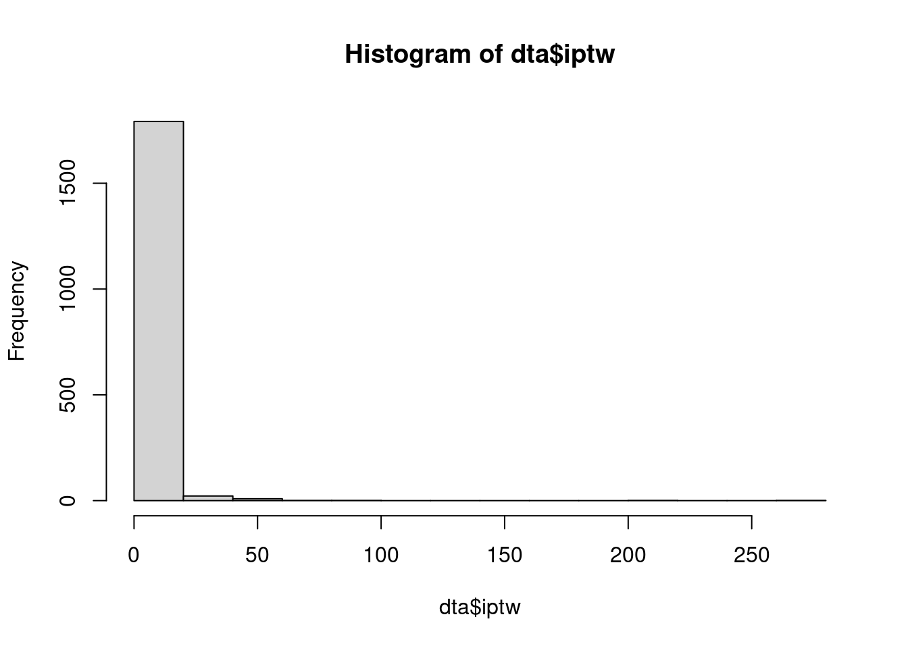
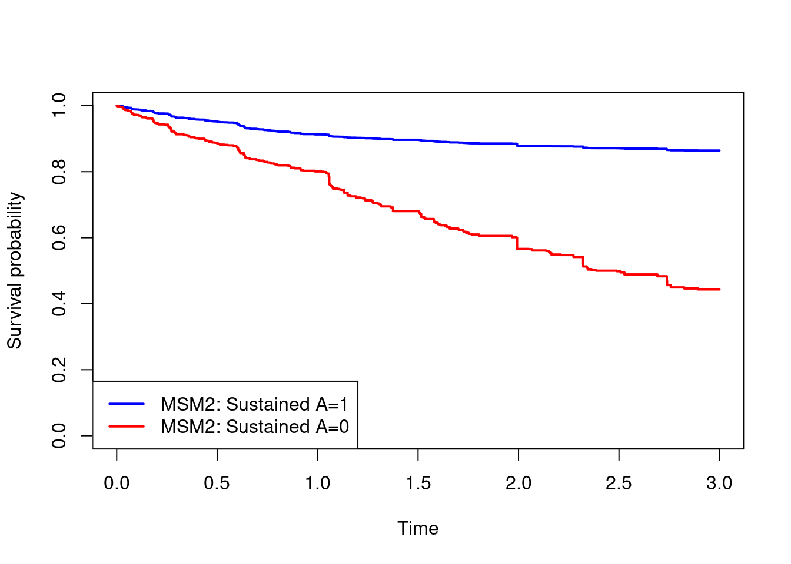

library(survival)
library(tidyverse)
library(data.table)
library(gfoRmula)
dta = readRDS(file = "data/dta_long.rds")Marginal structural models and g-formula for sustained treatment strategies
Data
In this practical we will use a simulated data set which includes data on 1000 individuals. The data include information on time-dependent treatment status \(A\), alongside three confounding variables (\(X,L_1,L_2\)), two of which are time-dependent. Individuals were followed up for death for up to 3 years.

You can assume the relationships between the variables is as depicted in the discrete time DAG below, where \(Y_t\) denotes the event indicator \(D\) at time \(t\) (\(t=1,2,3\)).

Aims
The aim is to estimate the effect of sustained use of the treatment vs sustained non-use of the treatment on survival up to 3 years. More specifically we will estimate the population average (marginal) survival curves if everyone had received treatment \(A\) from time 0 onwards (\(a_0=a_1=a_2=1\)) and if everyone had not received treatment \(A\) from time 0 onwards (\(a_0=a_1=a_2=0\)). The estimands are: \[S^{\underline{a}_0=1}(t)=\mathbb{P}(T^{\underline{a}_0=1}>t)\] \[S^{\underline{a}_0=0}(t)=\mathbb{P}(T^{\underline{a}_0=0}>t)\] Estimation will be performed using two methods:
- Marginal structural models estimated using IPTW
- G-formula
Load data and packages
In this practical we will use the following packages: survival, tidyverse, data.table, gfoRmula:
Marginal structural models (MSMs) estimated using IPTW
In this part we will estimate the estimands of interest, \(S^{\underline{a}_0=1}(t)\) and \(S^{\underline{a}_0=0}(t)\), using MSMs estimated using time-dependent IPTW to handle the time-dependent confounding. We begin by setting up the data and estimating the weights, before using these to fit two MSMs for the hazard: \[ h^{\underline{a}_0}(t)=h_0(t)e^{g(\bar{a}_t;\beta)}. \]
- Start by generating lagged values of treatment \(A\) (denoted
A_lag1andA_lag2) and lagged values of the time-dependent covariates \(L_1\) (L1_lag1,L1_lag2) and \(L_2\) (L2_lag1,L2_lag2). These will be used later. The lag variables can be generated (for example) using thetidyversepackage, e.g.dta = dta %>% group_by(id) %>% mutate(A_lag1=lag(A,1,default=0))
dta = dta%>%group_by(id)%>%
mutate(A_lag1=lag(A,1,default=0),A_lag2=lag(A,2,default=0))%>%
mutate(L1_lag1=lag(L1,1,default=0),L1_lag2=lag(L1,2,default=0))%>%
mutate(L2_lag1=lag(L2,1,default=0),L2_lag2=lag(L2,2,default=0))- In this question we will estimate time-dependent inverse probability of treatment weights:
- Using a logistic regression, fit a model for the probability of treatment at a given time, conditional on the current values of \(L_1,L_2\), treatment at the previous time point, baseline covariate \(X\), and an indicator for visit.
- Use the model to calculate the inverse probability of treatment weights at each time point. \[ W(t)=\prod_{k=0}^{t}\frac{1}{\mathbb{P}(A_k|A_{k-1},X,L_{1k},L_{2k})}, \quad t=0,1,2 \]
- Check out the distribution of the weights
iptw.mod = glm(A~A_lag1+A_lag2+X+L1+L2+as.factor(visit),data=dta,family="binomial")
pred.iptw = predict(iptw.mod,newdata=dta,type="response")
dta$iptw = dta$A/pred.iptw+(1-dta$A)/(1-pred.iptw)
dta$iptw = ave(dta$iptw,dta$id,FUN=cumprod)
hist(dta$iptw)
- The weights estimated in question 1 are unstabilized. Obtain stabilized weights of the form below, and have a look at their distribution. \[ SW(t)=\prod_{k=0}^{t}\frac{\mathbb{P}(A_k|A_{k-1})}{\mathbb{P}(A_k|A_{k-1},X,L_{1t},L_{2t})}, \quad t=0,1,2 \]
iptw.mod.stab = glm(A~A_lag1+A_lag2+as.factor(visit),data=dta,family="binomial")
pred.iptw.stab = predict(iptw.mod.stab,newdata=dta,type="response")
dta$iptw.stab = dta$A*pred.iptw.stab/pred.iptw+(1-dta$A)*(1-pred.iptw.stab)/(1-pred.iptw)
dta$iptw.stab = ave(dta$iptw.stab,dta$id,FUN=cumprod)
hist(dta$iptw.stab)
- We will now use the weights to fit an MSM of the form \(h^{\underline{a}_0}(t)=h_0(t)e^{\beta a_t}\), i.e. an MSM that states that the hazard depends only on current treatment. Try this with the unstabilized and stabilized weights:
- Fit the MSM using a weighted Cox regression. This can be done using
coxph} with theweights} option. - Use the MSM to obtain estimated survival curves under the treatment strategies (i) \(a_0=a_1=a_2=1\), (ii) \(a_0=a_1=a_2=0\). This can be done using
survfit(cox.msm1,newdata=data.frame(A=1))for strategy (i), for example. - Obtain estimates of the survival probabilities at time 3 under the two treatment strategies, i.e. \(S^{\underline{a}_0=1}(3)\) and \(S^{\underline{a}_0=0}(3)\), and the corresponding risk difference.
#---
#MSM1: Assumes that the hazard depends only on current A
#change iptw.stab to iptw for unstabilized weights.
cox.msm1=coxph(Surv(T.start,T.stop,D)~A,
data=dta,weights = dta$iptw.stab)
summary(cox.msm1)Call:
coxph(formula = Surv(T.start, T.stop, D) ~ A, data = dta, weights = dta$iptw.stab)
n= 1827, number of events= 187
coef exp(coef) se(coef) robust se z Pr(>|z|)
A -0.9920 0.3709 0.1656 0.1894 -5.238 1.63e-07 ***
---
Signif. codes: 0 '***' 0.001 '**' 0.01 '*' 0.05 '.' 0.1 ' ' 1
exp(coef) exp(-coef) lower .95 upper .95
A 0.3709 2.697 0.2559 0.5375
Concordance= 0.595 (se = 0.018 )
Likelihood ratio test= 42.55 on 1 df, p=7e-11
Wald test = 27.43 on 1 df, p=2e-07
Score (logrank) test = 38.89 on 1 df, p=4e-10, Robust = 22.6 p=2e-06
(Note: the likelihood ratio and score tests assume independence of
observations within a cluster, the Wald and robust score tests do not).#---
#Getting marginal survival curves under the two treatment strategies
surv.A1.msm1 = survfit(cox.msm1,newdata=data.frame(A=1))$surv
surv.A0.msm1 = survfit(cox.msm1,newdata=data.frame(A=0))$surv
#---
#Plotting marginal survival curves under the two treatment strategies
times=survfit(cox.msm1,newdata=data.frame(A=0))$time
plot(times,surv.A1.msm1,type="s",col="blue",lwd=2,
xlab="Time",ylab="Survival probability",ylim=c(0,1))
lines(times,surv.A0.msm1,type="s",col="red",lwd=2)
legend("bottomleft",c("MSM1: Sustained A=1","MSM1: Sustained A=0"),
col=c("blue","red"),lwd=2)
#---
#survival probabilities and risk difference at time 3
summary(survfit(cox.msm1,newdata=data.frame(A=1)),times=3)$surv[1] 0.7924074summary(survfit(cox.msm1,newdata=data.frame(A=0)),times=3)$surv[1] 0.5339666risk.A1.msm1.t3 = 1-summary(survfit(cox.msm1,newdata=data.frame(A=1)),times=3)$surv
risk.A0.msm1.t3 = 1-summary(survfit(cox.msm1,newdata=data.frame(A=0)),times=3)$surv
risk.A1.msm1.t3-risk.A0.msm1.t3[1] -0.2584408- Repeat question 3 using an MSM of the following form, where the hazard is allowed to depend on the history of treatment: \[
h^{\underline{a}_0}(t)=h_0(t)e^{\beta_0 a_t+\beta_1 a_{t-1}+\beta_2 a_{t-2}}.
\] To obtaining the survival curves under the two treatment strategies based on this MSM, we need to take into account that treatment status \(A\) is assumed to be 0 before time, i.e. everyone is untreated before time zero. This means that we cannot obtain the survival probability estimates using a single
survfitcommand (as far as we know!). You may wish to follow the code in the solution for this part.
#---
#MSM2: Assumes that the hazard depends on all lags of A
cox.msm2=coxph(Surv(T.start,T.stop,D)~A+A_lag1+A_lag2,
data=dta,weights = dta$iptw.stab)
summary(cox.msm2)Call:
coxph(formula = Surv(T.start, T.stop, D) ~ A + A_lag1 + A_lag2,
data = dta, weights = dta$iptw.stab)
n= 1827, number of events= 187
coef exp(coef) se(coef) robust se z Pr(>|z|)
A -0.8910 0.4103 0.1663 0.1825 -4.882 1.05e-06 ***
A_lag1 -1.3185 0.2675 0.2998 0.3107 -4.244 2.20e-05 ***
A_lag2 -0.4622 0.6299 0.4327 0.5288 -0.874 0.382
---
Signif. codes: 0 '***' 0.001 '**' 0.01 '*' 0.05 '.' 0.1 ' ' 1
exp(coef) exp(-coef) lower .95 upper .95
A 0.4103 2.437 0.2869 0.5867
A_lag1 0.2675 3.738 0.1455 0.4919
A_lag2 0.6299 1.588 0.2234 1.7758
Concordance= 0.616 (se = 0.019 )
Likelihood ratio test= 70.59 on 3 df, p=3e-15
Wald test = 38.54 on 3 df, p=2e-08
Score (logrank) test = 62.91 on 3 df, p=1e-13, Robust = 24.73 p=2e-05
(Note: the likelihood ratio and score tests assume independence of
observations within a cluster, the Wald and robust score tests do not).#---
#Getting marginal survival curves under the two treatment strategies
#baseline cumulative hazard
cumhaz=basehaz(cox.msm2,centered=F)$hazard
times=basehaz(cox.msm2,centered=F)$time
#hazards at each event time, obtained from the increments in the cumulative hazard
haz = diff(c(0,cumhaz))
#cumulative hazard and survival probability at each event time
#under treatment strategy "always treated"
cumhaz.A1 = cumsum(haz*exp(cox.msm2$coef["A"]+
cox.msm2$coef["A_lag1"]*(times>=1)+
cox.msm2$coef["A_lag2"]*(times>=2)))
cumhaz.A0 = cumsum(haz)
surv.A1.msm2 = exp(-cumhaz.A1)
surv.A0.msm2 = exp(-cumhaz.A0)
#---
#Plotting marginal survival curves under the two treatment strategies
plot(times,surv.A1.msm2,type="s",col="blue",lwd=2,
xlab="Time",ylab="Survival probability",ylim=c(0,1))
lines(times,surv.A0.msm2,type="s",col="red",lwd=2)
legend("bottomleft",c("MSM2: Sustained A=1","MSM2: Sustained A=0"),
col=c("blue","red"),lwd=2)
#---
#risk difference at time 3
risk.A1.msm2.t3 = 1-stepfun(times,c(1,surv.A1.msm2))(3)
risk.A0.msm2.t3 = 1-stepfun(times,c(1,surv.A0.msm2))(3)
rd.msm2.time3 = risk.A1.msm2.t3-risk.A0.msm2.t3#---
#compare marginal survival curves from the two MSMs
plot(times,surv.A1.msm1,type="s",col="blue",lwd=2,
xlab="Time",ylab="Survival probability",ylim=c(0,1))
lines(times,surv.A0.msm1,type="s",col="red",lwd=2)
lines(times,surv.A1.msm2,type="s",col="blue",lwd=2,lty=2)
lines(times,surv.A0.msm2,type="s",col="red",lwd=2,lty=2)
legend("bottomleft",c("MSM1: Sustained A=1","MSM1: Sustained A=0",
"MSM2: Sustained A=1","MSM2: Sustained A=0"),
col=rep(c("blue","red"),4),lty=rep(c(1:4),each=2),lwd=2)
g-formula
- Follow the steps below to implement the parametric g-formula `by hand’ to estimate \(S^{\underline{a}_0=1}(t)\) and \(S^{\underline{a}_0=0}(t)\). We hope that this provides some insight into how this method works.
What are the estimated marginal survival probabilities at times \(t=1,2,3\) under the two treatment strategies?
#---------------------
#(a) Fit a linear regression for L1_{k}|L1_{k-1}, L2_{k-1},X,A_{k-1}
#where k denotes visit, for visits 1 and 2 combined.
#---------------------
mod.L1 = lm(L1~A_lag1+X+L1_lag1+L2_lag1+as.factor(T.start),data=dta[dta$T.start>=1,])
sd.L1 = summary(mod.L1)$sigma#residual SE, used later
#---------------------
#(b)] Fit a logistic regression for L2_{k}|L1_{k}, L2_{k-1},X,A_{k-1}
#where k denotes visit, for visits 1 and 2 combined.
#---------------------
mod.L2 = glm(L2~A_lag1+X+L1+L2_lag1+as.factor(T.start),
data=dta[dta$T.start>=1,],family="binomial")
#---------------------
#(c) Fit a logistic regression for Y_{k}|L1_{k-1}, L2_{k-1},X,A_{k-1}
#where k denotes visit, for visits 0, 1, and 2 combined.
#This is a discrete time hazard model.
#---------------------
mod.D = glm(D~A+X+L1+L2+as.factor(T.start),data=dta,family="binomial")
#---------------------
#(d) Create a new data frame with the same columns names as dta,
#with 3 rows per individual. This data set will be populated in later steps.
#---------------------
n = length(unique(dta$id))
dta.sim = data.frame(id=rep(1:n,each=3),T.start=rep(0:2,n),
X=NA,A=NA,L1=NA,L2=NA,A_lag1=NA,L1_lag1=NA,L2_lag1=NA,haz=NA)
#---------------------
#(e) In dta.sim set A to a (for a=0,1) at all time points for all individuals.
#Set X to the observed values.
#Set L1 and L2 to their observed values at visit 0.
#---------------------
#set a to 1 or 0, depending on treatment strategy of interest
a = 0
dta.sim$A=a
dta.sim$A_lag1=ifelse(dta.sim$T.start==0,0,a)
dta.sim$X=rep(dta$X[dta$T.start==0],each=3)
dta.sim$L1[dta.sim$T.start==0] = dta[dta$T.start==0,]$L1
dta.sim$L1_lag1[dta.sim$T.start==0] = 0
dta.sim$L2[dta.sim$T.start==0] = dta[dta$T.start==0,]$L2
dta.sim$L2_lag1[dta.sim$T.start==0] = 0
#---------------------
#(f) Simulate a value of L1 at time 1 for each individual by sampling from a normal
#distribution with mean given by the fitted value from the linear regression in step (a)
#and standard deviation given by the residual standard error.
#---------------------
dta.sim$L1_lag1[dta.sim$T.start==1] = dta.sim$L1[dta.sim$T.start==0]
dta.sim$L2_lag1[dta.sim$T.start==1] = dta.sim$L2[dta.sim$T.start==0]
mean.L1 = predict(mod.L1,newdata=dta.sim[dta.sim$T.start==1,],type="response")
dta.sim$L1[dta.sim$T.start==1] = rnorm(n,mean.L1,sd.L1)
#---------------------
#(g) Simulate a value of L2 at time 1 for each individual by sampling from a Bernoulli
#distribution with probability given by the predicted probabilities from the logistic
#regression in step (b).
#---------------------
mean.L2 = predict(mod.L2,newdata=dta.sim[dta.sim$T.start==1,],type="response")
dta.sim$L2[dta.sim$T.start==1] = rbinom(n,1,mean.L2)
#---------------------
#(h) Simulate a value of L2 at time 2 for each individual in a similar way as in step (f).
#---------------------
dta.sim$L1_lag1[dta.sim$T.start==2] = dta.sim$L1[dta.sim$T.start==1]
dta.sim$L2_lag1[dta.sim$T.start==2] = dta.sim$L2[dta.sim$T.start==1]
mean.L1 = predict(mod.L1,newdata=dta.sim[dta.sim$T.start==2,],type="response")
dta.sim$L1[dta.sim$T.start==2] = rnorm(n,mean.L1,sd.L1)
#---------------------
#(i) Simulate a value of L2 at time 2 for each individual, in a similar way as in step (g).
#---------------------
mean.L2 = predict(mod.L2,newdata=dta.sim[dta.sim$T.start==2,],type="response")
dta.sim$L2[dta.sim$T.start==2] = rbinom(n,1,mean.L2)
#---------------------
#(j) Estimate the (discrete time) hazard at times t=1,2,3 for each individual
# using the model fitted in step (c),
# using the simulated covariate values from previous steps.
#---------------------
for(j in 0:2){
dta.sim$haz[dta.sim$T.start==j] = predict(mod.D,newdata=dta.sim[dta.sim$T.start==j,],
type="response")
}
#---------------------
#(k) Estimate the conditional survival probability under treatment strategy
# at times t=1,2,3 for each individual
# using the discrete-time hazards estimated in the previous step.
#---------------------
dta.sim$surv.prob = ave(1-dta.sim$haz,dta.sim$id,FUN=cumprod)
#---------------------
#(l) Calculate the mean survival probability at times t=1,2,3.
#This is our estimate of the marginal survival probability
#under the sustained treatment strategy a0=a1=a2=a
#---------------------
sapply(0:2,FUN=function(x){mean(dta.sim$surv.prob[dta.sim$T.start==x])})[1] 0.8396178 0.6349149 0.4457436- Use the
gformula_survivalfunction in thegfoRmulapackage to implement the parametric g-formula, by adapting the example in the lecture slides. What are the estimated marginal survival probabilities at times \(t=1,2,3\) under the two treatment strategies?
#data has to be in the form of a data table
dta.gform = data.table(dta)
#apply gformula function
gform = gformula_survival(obs_data = dta.gform,
id = 'id',
time_points = 3,
time_name = 'T.start',
covnames = c('A','L1','L2'),
covtypes = c('binary','normal','binary'),
covparams =
list(covlink = c('logit', 'identity', 'logit'),
covmodels =
c(A ~ lag1_A + X + L1 + L2 + as.factor(T.start),
L1 ~ lag1_A + X + lag1_L1 + lag1_L2 + as.factor(T.start),
L2 ~ lag1_A + X + L1 + lag1_L2 + as.factor(T.start))),
histvars = list(c('A', 'L1', 'L2')),
histories = c(lagged),
basecovs = 'X',
outcome_name = 'D',
ymodel = D ~ A + X + L1 + L2 + as.factor(T.start),
intvars = list('A', 'A'),
interventions = list(list(c(static, rep(0, 3))),
list(c(static, rep(1, 3)))),
int_times = list(c(0:2),c(0:2)),
int_descript = c('Never treat', 'Always treat'),
sim_data_b = FALSE,
seed = 1234,
nsamples = 10,
#number of bootstrap samples:
#set to 10 here in the interests of time, but recommend using 1000
model_fits = TRUE,
show_progress = TRUE)
gform$result k Interv. NP Risk g-form risk Risk SE Risk lower 95% CI
<num> <num> <num> <num> <num> <num>
1: 0 0 0.1080000 0.10800000 0.006896859 0.09890000
2: 0 1 NA 0.16038223 0.009977718 0.14669448
3: 0 2 NA 0.05920953 0.009035162 0.04804313
4: 1 0 0.2003327 0.23334982 0.014235056 0.22853606
5: 1 1 NA 0.37067984 0.026184620 0.35211392
6: 1 2 NA 0.10911939 0.014770751 0.08989074
7: 2 0 0.2646416 0.33492302 0.012928313 0.32746286
8: 2 1 NA 0.55376512 0.029687549 0.52458603
9: 2 2 NA 0.14422724 0.018928880 0.11526240
Risk upper 95% CI Risk ratio RR SE RR lower 95% CI RR upper 95% CI
<num> <num> <num> <num> <num>
1: 0.11855000 1.0000000 0.00000000 1.0000000 1.0000000
2: 0.17499957 1.4850206 0.07432389 1.3700649 1.5982841
3: 0.07718767 0.5482364 0.06633569 0.4498578 0.6632936
4: 0.26598826 1.0000000 0.00000000 1.0000000 1.0000000
5: 0.42228577 1.5885157 0.06698023 1.4869708 1.6933041
6: 0.13703452 0.4676215 0.05595326 0.3727221 0.5522950
7: 0.36658322 1.0000000 0.00000000 1.0000000 1.0000000
8: 0.60292651 1.6534101 0.06760075 1.5418510 1.7593749
9: 0.17423417 0.4306280 0.05100182 0.3501449 0.5088472
Risk difference RD SE RD lower 95% CI RD upper 95% CI % Intervened On
<num> <num> <num> <num> <num>
1: 0.00000000 0.000000000 0.00000000 0.00000000 NA
2: 0.05238223 0.007377400 0.04187946 0.06384012 NA
3: -0.04879047 0.007423618 -0.05955919 -0.03871218 NA
4: 0.00000000 0.000000000 0.00000000 0.00000000 NA
5: 0.13733002 0.017357877 0.11825783 0.16883759 NA
6: -0.12423043 0.016099644 -0.15541903 -0.10832188 NA
7: 0.00000000 0.000000000 0.00000000 0.00000000 0.0
8: 0.21884210 0.023487571 0.18433665 0.25403097 71.0
9: -0.19069578 0.017385480 -0.21768185 -0.16683480 77.7
Aver % Intervened On
<num>
1: NA
2: NA
3: NA
4: NA
5: NA
6: NA
7: 0.00000
8: 39.66667
9: 43.00000